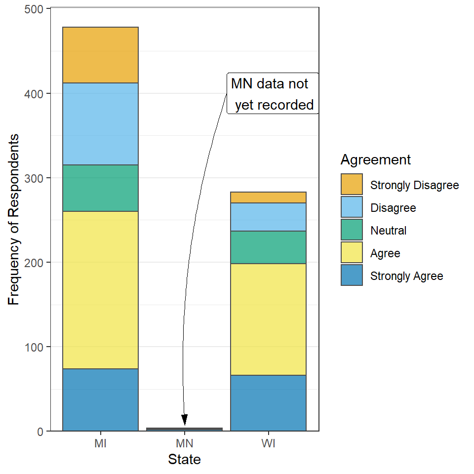
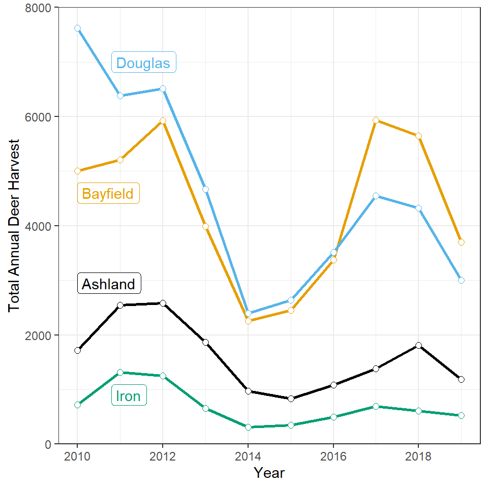

State and No Good Deer Hunting
Make the plot shown under “State and No Good Deer Hunting 1” on this page. I have since learned that these data were preliminary and that results from Minnesota had largely not been entered into the database. Add a note on the inside of the plot that explains this. You should include an arrow that appropriately points to the low bar for Minnesota.
Total Annual Harvest by County and Year
Legends for very simple plot scan sometimes waste space and be distracting. Such an example may be the legend for the plot shown under “Total Annual Harvest by County and Year” on this page. One alternative is to place a small label near the lines in the plot, as shown below. Construct ggplot2 code to match this graph.

Costs of College I
Costs of attending college can be compared across colleges at www.collegetuitioncompare.com. The data in this CSV file contains cost information for four-year private colleges and universities in Wisconsin. Construct ggplot2 code to emulate the plot below (as closely as you can). Note that the dashed line is the line where on-campus and off-campus costs are equal and, by definition, has a slope of 1 and an intercept of zero. This line can be added to the plot with geom_abline() (you may need to perform an internet search for how to use this function). Also note that I widened the “padding” around the text in the two “cheaper” labels by including label.padding=unit(0.35,"lines") in the appropriate function.

BONUS - Costs of College II
Construct ggplot2 code to emulate the plot below (as closely as you can). Note that this uses code from a package other than ggplot2 that is used to place text in locations that minimize overlap of other text (i.e., text labels are repelled from each other).
